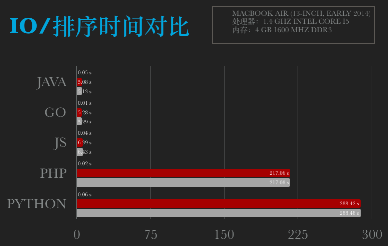

<!doctype html>
<html lang="zh-CN">
<head><meta name="generator" content="Hexo 3.9.0">
    <meta charset="UTF-8">
    <meta http-equiv="X-UA-Compatible" content="IE=11,IE=10,IE=9,IE=8">
    <meta name="baidu-site-verification" content="dIcXMeY8Ya">
    
    <title>不同语言下文件读取和排序测试 | 小牛试一刀</title>
    <meta name="viewport" content="width=device-width, initial-scale=1, maximum-scale=1, user-scalable=0">
    <meta name="keywords" content="Anthony, 刘经济, 技术博客, 个人博客, PHP, Golang, Linux, FullStack">
    <meta name="description" content="待人以儒墨，不热爱前端技术的后端开发不是一个好的吃货。">

    
    <link rel="alternative" href="/atom.xml" title="小牛试一刀" type="application/atom+xml">
    
    
    <link rel="shortcut icon" href="/favicon.ico">
    
    <link rel="stylesheet" href="/css/style.css">
    <!--[if lt IE 9]>
    <script src="/js/html5.js"></script>
    <![endif]-->
    
<script>
var _hmt = _hmt || [];
(function() {
  var hm = document.createElement("script");
  hm.src = "https://hm.baidu.com/hm.js?d5ebf515ab530cfbdda5f5c85093fb41";
  var s = document.getElementsByTagName("script")[0]; 
  s.parentNode.insertBefore(hm, s);
})();
</script>


</head>
</html>
<body class="home">
    <!--[if lt IE 9]>
    <div class="browsehappy">
        当前网页 <strong>不支持</strong>
        你正在使用的浏览器. 为了正常的访问, 请 <a href="http://browsehappy.com/">升级你的浏览器</a>.
    </div>
    <![endif]-->

    <!-- 博客头部 -->
    <header class="header">
    <section class="container header-main">
        <div class="logo">
            <a href="/">
                <div class="cover">
                    <span class="name">小牛试一刀</span>
                    <span class="description">斯人笔记本</span>
                </div>
            </a>
        </div>
        <div class="dropnav icon-paragraph-justify" id="JELON__btnDropNav"></div>
        <ul class="menu hidden" id="JELON__menu">
            
            <li rel="/posts/9739d7d7.html" class="item ">
                <a href="/" title="首页" class="icon-home">&nbsp;首页</a>
            </li>
            
            <li rel="/posts/9739d7d7.html" class="item ">
                <a href="/about/" title="关于" class="icon-about">&nbsp;关于</a>
            </li>
            
            <li rel="/posts/9739d7d7.html" class="item ">
                <a href="/comment/" title="留言" class="icon-comment">&nbsp;留言</a>
            </li>
            
        </ul>
        <div class="profile clearfix">
            <div class="feeds fl">
                
                
                <p class="links">
                    
                        <a href="https://github.com/haowanxing" target="_blank">Github</a>
                        |
                    
                </p>
                <p class="sns">
                    
                        <a href="http://weibo.com/u/2214092525" class="sinaweibo" target="_blank"><b>■</b> 新浪微博</a>
                    
                        <a href="https://www.facebook.com/imsry.cn/" class="qqweibo" target="_blank"><b>■</b> Facebook</a>
                    
                    <a href="javascript: void(0);" class="wechat">
                        <b>■</b>
                        公众号
                        <span class="popover">
                            
                            <i class="arrow"></i>
                        </span>
                    </a>
                </p>
                
            </div>
            <div class="avatar fr">
                
            </div>
        </div>
    </section>
</header>


    <!-- 博客正文 -->
    <div class="container body clearfix">
        <section class="content">
            <div class="content-main widget">
                <!-- 文章页 -->
<!-- 文章 -->
<article class="post article">
    <header class="text-center">
        <h3 class="post-title"><span>不同语言下文件读取和排序测试</span></h3>
    </header>
    <p class="post-meta text-center">
         发表于
        <time datetime="2018-08-22T06:32:38.000Z">2018-08-22 14:32:38</time>

        <!-- 不蒜子统计 -->
        <span id="busuanzi_container_page_pv" style='display:none'">
              <i class="icon-smile icon"></i> 阅读数：<span id="busuanzi_value_page_pv"></span>次
        </span>


    </p>
    <div class="post-content">
        <p></p>
<p>测试机器配置：</p>
<ul>
<li>MacBook Air (13-inch, Early 2014)</li>
<li>处理器：1.4 GHz Intel Core i5</li>
<li>内存：4 GB 1600 MHz DDR3</li>
</ul>
<a id="more"></a>
<h2 id="PHP"><a href="#PHP" class="headerlink" title="PHP"></a>PHP</h2><figure class="highlight plain"><table><tr><td class="gutter"><pre><span class="line">1</span><br><span class="line">2</span><br><span class="line">3</span><br></pre></td><td class="code"><pre><span class="line">PHP 7.1.16 (cli) (built: Mar 31 2018 02:59:59) ( NTS )</span><br><span class="line">Copyright (c) 1997-2018 The PHP Group</span><br><span class="line">Zend Engine v3.1.0, Copyright (c) 1998-2018 Zend Technologies</span><br></pre></td></tr></table></figure>
<figure class="highlight php"><table><tr><td class="gutter"><pre><span class="line">1</span><br><span class="line">2</span><br><span class="line">3</span><br><span class="line">4</span><br><span class="line">5</span><br><span class="line">6</span><br><span class="line">7</span><br><span class="line">8</span><br><span class="line">9</span><br><span class="line">10</span><br><span class="line">11</span><br><span class="line">12</span><br><span class="line">13</span><br><span class="line">14</span><br><span class="line">15</span><br><span class="line">16</span><br><span class="line">17</span><br><span class="line">18</span><br><span class="line">19</span><br><span class="line">20</span><br><span class="line">21</span><br><span class="line">22</span><br><span class="line">23</span><br><span class="line">24</span><br><span class="line">25</span><br><span class="line">26</span><br><span class="line">27</span><br><span class="line">28</span><br><span class="line">29</span><br><span class="line">30</span><br><span class="line">31</span><br><span class="line">32</span><br><span class="line">33</span><br><span class="line">34</span><br><span class="line">35</span><br><span class="line">36</span><br><span class="line">37</span><br><span class="line">38</span><br><span class="line">39</span><br><span class="line">40</span><br><span class="line">41</span><br><span class="line">42</span><br><span class="line">43</span><br><span class="line">44</span><br><span class="line">45</span><br><span class="line">46</span><br></pre></td><td class="code"><pre><span class="line"><span class="meta">&lt;?php</span></span><br><span class="line">$t1 = microtime(<span class="keyword">true</span>);  </span><br><span class="line"></span><br><span class="line">$fileName = <span class="string">"Data.txt"</span>;</span><br><span class="line"><span class="keyword">if</span>(($file=fopen($fileName,<span class="string">'r'</span>)) === <span class="keyword">false</span>)&#123;</span><br><span class="line">	<span class="keyword">echo</span> <span class="string">'读取文件:'</span>.$fileName.<span class="string">"失败\n"</span>;</span><br><span class="line">	<span class="keyword">exit</span>;</span><br><span class="line">&#125;</span><br><span class="line"><span class="keyword">if</span>(<span class="keyword">empty</span>($file))&#123;</span><br><span class="line">	<span class="keyword">echo</span> <span class="string">"文件为空!\n"</span>;</span><br><span class="line">	<span class="keyword">exit</span>;</span><br><span class="line">&#125;</span><br><span class="line">$data = <span class="keyword">array</span>();</span><br><span class="line"><span class="keyword">while</span>(!feof($file))&#123;</span><br><span class="line">	$lineStr = fgets($file);</span><br><span class="line">	array_push($data, trim($lineStr));</span><br><span class="line">&#125;</span><br><span class="line">$t2 = microtime(<span class="keyword">true</span>);</span><br><span class="line"><span class="keyword">echo</span> <span class="string">'Read time:'</span> . ($t2 - $t1)*<span class="number">1000</span> . <span class="string">"ms\n"</span>;  </span><br><span class="line">BubbleSort($data);</span><br><span class="line">var_dump($data);</span><br><span class="line">fclose($file);</span><br><span class="line"></span><br><span class="line">$t3 = microtime(<span class="keyword">true</span>);</span><br><span class="line">  </span><br><span class="line"><span class="keyword">echo</span> <span class="string">'Sort time:'</span> . ($t3 - $t2)*<span class="number">1000</span> . <span class="string">"ms\n"</span>;  </span><br><span class="line"><span class="keyword">echo</span> <span class="string">'Finished time:'</span> . ($t3 - $t1)*<span class="number">1000</span> . <span class="string">"ms\n"</span>;  </span><br><span class="line"></span><br><span class="line"><span class="function"><span class="keyword">function</span> <span class="title">BubbleSort</span><span class="params">(&amp;$data)</span></span>&#123;</span><br><span class="line">	$len = count($data);</span><br><span class="line">	<span class="keyword">for</span>($i=<span class="number">0</span>;$i&lt;$len;$i++)&#123;</span><br><span class="line">		$flag = <span class="number">0</span>;</span><br><span class="line">		<span class="keyword">for</span>($j=<span class="number">1</span>;$j&lt;($len-$i);$j++)&#123;</span><br><span class="line">			<span class="keyword">if</span>($data[$j]&lt;$data[$j<span class="number">-1</span>]) &#123;</span><br><span class="line">				$tmp = $data[$j];</span><br><span class="line">				$data[$j] = $data[$j<span class="number">-1</span>];</span><br><span class="line">				$data[$j<span class="number">-1</span>] = $tmp;</span><br><span class="line">				$flag = <span class="number">1</span>;</span><br><span class="line">			&#125;</span><br><span class="line">		&#125;</span><br><span class="line">		<span class="keyword">if</span>($flag == <span class="number">0</span>)&#123;</span><br><span class="line">			<span class="keyword">return</span>;</span><br><span class="line">		&#125;</span><br><span class="line">	&#125;</span><br><span class="line">&#125;</span><br><span class="line"><span class="meta">?&gt;</span></span><br></pre></td></tr></table></figure>
<p>测试结果：</p>
<figure class="highlight bash"><table><tr><td class="gutter"><pre><span class="line">1</span><br><span class="line">2</span><br><span class="line">3</span><br><span class="line">4</span><br><span class="line">5</span><br><span class="line">6</span><br><span class="line">7</span><br><span class="line">8</span><br><span class="line">9</span><br><span class="line">10</span><br><span class="line">11</span><br><span class="line">12</span><br><span class="line">13</span><br><span class="line">14</span><br><span class="line">15</span><br><span class="line">16</span><br><span class="line">17</span><br><span class="line">18</span><br><span class="line">19</span><br><span class="line">20</span><br><span class="line">21</span><br><span class="line">22</span><br><span class="line">23</span><br><span class="line">24</span><br></pre></td><td class="code"><pre><span class="line">~/Sites/languageDiff/sort » php sort.php</span><br><span class="line">Read time:20.021915435791ms</span><br><span class="line">Sort time:219256.12616539ms</span><br><span class="line">Finished time:219276.14808083ms</span><br><span class="line">-------------------------------------------------------</span><br><span class="line">~/Sites/languageDiff/sort » php sort.php</span><br><span class="line">Read time:19.091129302979ms</span><br><span class="line">Sort time:229677.68502235ms</span><br><span class="line">Finished time:229696.77615166ms</span><br><span class="line">-------------------------------------------------------</span><br><span class="line">~/Sites/languageDiff/sort » php sort.php</span><br><span class="line">Read time:21.70205116272ms</span><br><span class="line">Sort time:228220.97086906ms</span><br><span class="line">Finished time:228242.67292023ms</span><br><span class="line">-------------------------------------------------------</span><br><span class="line">~/Sites/languageDiff/sort » php sort.php</span><br><span class="line">Read time:20.930051803589ms</span><br><span class="line">Sort time:206329.57100868ms</span><br><span class="line">Finished time:206350.50106049ms</span><br><span class="line">-------------------------------------------------------</span><br><span class="line">~/Sites/languageDiff/sort » php sort.php</span><br><span class="line">Read time:18.213033676147ms</span><br><span class="line">Sort time:201813.07411194ms</span><br><span class="line">Finished time:201831.28714561ms</span><br></pre></td></tr></table></figure>
<h2 id="Java"><a href="#Java" class="headerlink" title="Java"></a>Java</h2><figure class="highlight plain"><table><tr><td class="gutter"><pre><span class="line">1</span><br><span class="line">2</span><br><span class="line">3</span><br></pre></td><td class="code"><pre><span class="line">java version &quot;10.0.1&quot; 2018-04-17</span><br><span class="line">Java(TM) SE Runtime Environment 18.3 (build 10.0.1+10)</span><br><span class="line">Java HotSpot(TM) 64-Bit Server VM 18.3 (build 10.0.1+10, mixed mode)</span><br></pre></td></tr></table></figure>
<figure class="highlight java"><table><tr><td class="gutter"><pre><span class="line">1</span><br><span class="line">2</span><br><span class="line">3</span><br><span class="line">4</span><br><span class="line">5</span><br><span class="line">6</span><br><span class="line">7</span><br><span class="line">8</span><br><span class="line">9</span><br><span class="line">10</span><br><span class="line">11</span><br><span class="line">12</span><br><span class="line">13</span><br><span class="line">14</span><br><span class="line">15</span><br><span class="line">16</span><br><span class="line">17</span><br><span class="line">18</span><br><span class="line">19</span><br><span class="line">20</span><br><span class="line">21</span><br><span class="line">22</span><br><span class="line">23</span><br><span class="line">24</span><br><span class="line">25</span><br><span class="line">26</span><br><span class="line">27</span><br><span class="line">28</span><br><span class="line">29</span><br><span class="line">30</span><br><span class="line">31</span><br><span class="line">32</span><br><span class="line">33</span><br><span class="line">34</span><br><span class="line">35</span><br><span class="line">36</span><br><span class="line">37</span><br><span class="line">38</span><br><span class="line">39</span><br><span class="line">40</span><br><span class="line">41</span><br><span class="line">42</span><br><span class="line">43</span><br><span class="line">44</span><br><span class="line">45</span><br><span class="line">46</span><br><span class="line">47</span><br><span class="line">48</span><br><span class="line">49</span><br><span class="line">50</span><br><span class="line">51</span><br><span class="line">52</span><br><span class="line">53</span><br><span class="line">54</span><br><span class="line">55</span><br></pre></td><td class="code"><pre><span class="line"><span class="keyword">import</span> java.io.BufferedReader;</span><br><span class="line"><span class="keyword">import</span> java.io.FileNotFoundException;</span><br><span class="line"><span class="keyword">import</span> java.io.FileReader;</span><br><span class="line"><span class="keyword">import</span> java.io.IOException;</span><br><span class="line"></span><br><span class="line"><span class="keyword">public</span> <span class="class"><span class="keyword">class</span> <span class="title">sort</span> </span>&#123;</span><br><span class="line"></span><br><span class="line">	<span class="function"><span class="keyword">public</span> <span class="keyword">static</span> <span class="keyword">void</span> <span class="title">main</span><span class="params">(String[] args)</span> </span>&#123;</span><br><span class="line">		<span class="keyword">try</span> &#123;</span><br><span class="line">        	<span class="keyword">long</span> t1 = System.currentTimeMillis();</span><br><span class="line">        	<span class="keyword">int</span>[] data = <span class="keyword">new</span> <span class="keyword">int</span>[<span class="number">50000</span>];</span><br><span class="line">            BufferedReader br = <span class="keyword">new</span> BufferedReader(<span class="keyword">new</span> FileReader(<span class="string">"Data.txt"</span>));</span><br><span class="line"></span><br><span class="line">            String line = <span class="keyword">null</span>;</span><br><span class="line">            <span class="keyword">int</span> index = <span class="number">0</span>;</span><br><span class="line">            <span class="keyword">while</span> ((line = br.readLine()) != <span class="keyword">null</span>) &#123;</span><br><span class="line">            	data[index] = Integer.parseInt(line);</span><br><span class="line">                index++;</span><br><span class="line">            &#125;</span><br><span class="line">            <span class="keyword">if</span> (br != <span class="keyword">null</span>) &#123;</span><br><span class="line">                br.close();</span><br><span class="line">            &#125;</span><br><span class="line">	        <span class="keyword">long</span> t2 = System.currentTimeMillis();</span><br><span class="line">	        System.out.println(<span class="string">"Read time: "</span> + String.valueOf(t2 - t1) + <span class="string">"ms"</span>);</span><br><span class="line"></span><br><span class="line">	        BubbleSort(data);</span><br><span class="line">	        <span class="keyword">long</span> t3 = System.currentTimeMillis();</span><br><span class="line">	        System.out.println(<span class="string">"Sort time: "</span> + String.valueOf(t3 - t2) + <span class="string">"ms"</span>);</span><br><span class="line">	        System.out.println(<span class="string">"Finished time: "</span> + String.valueOf(t3 - t1) + <span class="string">"ms"</span>);</span><br><span class="line">        &#125; <span class="keyword">catch</span> (FileNotFoundException e) &#123;</span><br><span class="line">            e.printStackTrace();</span><br><span class="line">        &#125; <span class="keyword">catch</span> (IOException e) &#123;</span><br><span class="line">            e.printStackTrace();</span><br><span class="line">        &#125;</span><br><span class="line">    &#125;</span><br><span class="line"></span><br><span class="line">	<span class="function"><span class="keyword">public</span> <span class="keyword">static</span> <span class="keyword">void</span> <span class="title">BubbleSort</span><span class="params">(<span class="keyword">int</span>[] a)</span> </span>&#123;</span><br><span class="line">	    <span class="keyword">int</span> j, flag;</span><br><span class="line">	    <span class="keyword">int</span> temp;</span><br><span class="line">	    <span class="keyword">for</span> (<span class="keyword">int</span> i = <span class="number">0</span>; i &lt; a.length; i++) &#123;</span><br><span class="line">	        flag = <span class="number">0</span>;</span><br><span class="line">	        <span class="keyword">for</span> (j = <span class="number">1</span>; j &lt; a.length - i; j++) &#123;</span><br><span class="line">	            <span class="keyword">if</span> (a[j] &lt; a[j-<span class="number">1</span>]) &#123;</span><br><span class="line">	                temp = a[j];</span><br><span class="line">	                a[j] = a[j - <span class="number">1</span>];</span><br><span class="line">	                a[j - <span class="number">1</span>] = temp;</span><br><span class="line">	                flag = <span class="number">1</span>;</span><br><span class="line">	            &#125;</span><br><span class="line">	        &#125;</span><br><span class="line">	        <span class="keyword">if</span> (flag == <span class="number">0</span>) &#123;</span><br><span class="line">	            <span class="keyword">return</span>;</span><br><span class="line">	        &#125;</span><br><span class="line">	    &#125;</span><br><span class="line">	&#125;</span><br><span class="line">&#125;</span><br></pre></td></tr></table></figure>
<p>测试结果：</p>
<figure class="highlight bash"><table><tr><td class="gutter"><pre><span class="line">1</span><br><span class="line">2</span><br><span class="line">3</span><br><span class="line">4</span><br><span class="line">5</span><br><span class="line">6</span><br><span class="line">7</span><br><span class="line">8</span><br><span class="line">9</span><br><span class="line">10</span><br><span class="line">11</span><br><span class="line">12</span><br><span class="line">13</span><br><span class="line">14</span><br><span class="line">15</span><br><span class="line">16</span><br><span class="line">17</span><br><span class="line">18</span><br><span class="line">19</span><br><span class="line">20</span><br><span class="line">21</span><br><span class="line">22</span><br><span class="line">23</span><br><span class="line">24</span><br></pre></td><td class="code"><pre><span class="line">~/Sites/languageDiff/sort » java sort</span><br><span class="line">Read time: 56ms</span><br><span class="line">Sort time: 5286ms</span><br><span class="line">Finished time: 5342ms</span><br><span class="line">-------------------------------------------------------</span><br><span class="line">~/Sites/languageDiff/sort » java sort</span><br><span class="line">Read time: 47ms</span><br><span class="line">Sort time: 4911ms</span><br><span class="line">Finished time: 4958ms</span><br><span class="line">-------------------------------------------------------</span><br><span class="line">~/Sites/languageDiff/sort » java sort</span><br><span class="line">Read time: 46ms</span><br><span class="line">Sort time: 4903ms</span><br><span class="line">Finished time: 4949ms</span><br><span class="line">-------------------------------------------------------</span><br><span class="line">~/Sites/languageDiff/sort » java sort</span><br><span class="line">Read time: 47ms</span><br><span class="line">Sort time: 4953ms</span><br><span class="line">Finished time: 5000ms</span><br><span class="line">-------------------------------------------------------</span><br><span class="line">~/Sites/languageDiff/sort » java sort</span><br><span class="line">Read time: 49ms</span><br><span class="line">Sort time: 5335ms</span><br><span class="line">Finished time: 5384ms</span><br></pre></td></tr></table></figure>
<h2 id="Go"><a href="#Go" class="headerlink" title="Go"></a>Go</h2><figure class="highlight plain"><table><tr><td class="gutter"><pre><span class="line">1</span><br></pre></td><td class="code"><pre><span class="line">go version go1.10.3 darwin/amd64</span><br></pre></td></tr></table></figure>
<figure class="highlight go"><table><tr><td class="gutter"><pre><span class="line">1</span><br><span class="line">2</span><br><span class="line">3</span><br><span class="line">4</span><br><span class="line">5</span><br><span class="line">6</span><br><span class="line">7</span><br><span class="line">8</span><br><span class="line">9</span><br><span class="line">10</span><br><span class="line">11</span><br><span class="line">12</span><br><span class="line">13</span><br><span class="line">14</span><br><span class="line">15</span><br><span class="line">16</span><br><span class="line">17</span><br><span class="line">18</span><br><span class="line">19</span><br><span class="line">20</span><br><span class="line">21</span><br><span class="line">22</span><br><span class="line">23</span><br><span class="line">24</span><br><span class="line">25</span><br><span class="line">26</span><br><span class="line">27</span><br><span class="line">28</span><br><span class="line">29</span><br><span class="line">30</span><br><span class="line">31</span><br><span class="line">32</span><br><span class="line">33</span><br><span class="line">34</span><br><span class="line">35</span><br><span class="line">36</span><br><span class="line">37</span><br><span class="line">38</span><br><span class="line">39</span><br><span class="line">40</span><br><span class="line">41</span><br><span class="line">42</span><br><span class="line">43</span><br><span class="line">44</span><br><span class="line">45</span><br><span class="line">46</span><br><span class="line">47</span><br><span class="line">48</span><br><span class="line">49</span><br><span class="line">50</span><br><span class="line">51</span><br><span class="line">52</span><br><span class="line">53</span><br><span class="line">54</span><br><span class="line">55</span><br><span class="line">56</span><br><span class="line">57</span><br></pre></td><td class="code"><pre><span class="line"><span class="keyword">package</span> main</span><br><span class="line"></span><br><span class="line"><span class="keyword">import</span> (</span><br><span class="line">	<span class="string">"bufio"</span></span><br><span class="line">	<span class="string">"fmt"</span></span><br><span class="line">	<span class="string">"io"</span></span><br><span class="line">	<span class="string">"os"</span></span><br><span class="line">	<span class="string">"strconv"</span></span><br><span class="line">	<span class="string">"time"</span></span><br><span class="line">)</span><br><span class="line"></span><br><span class="line"><span class="function"><span class="keyword">func</span> <span class="title">main</span><span class="params">()</span></span> &#123;</span><br><span class="line">	fileName := <span class="string">"Data.txt"</span></span><br><span class="line">	data := <span class="built_in">make</span>([]<span class="keyword">int</span>, <span class="number">0</span>, <span class="number">50000</span>)</span><br><span class="line">	start := time.Now()</span><br><span class="line">	fi, err := os.Open(fileName)</span><br><span class="line">	<span class="keyword">if</span> err != <span class="literal">nil</span> &#123;</span><br><span class="line">		fmt.Printf(<span class="string">"Error: %s\n"</span>, err)</span><br><span class="line">		<span class="keyword">return</span></span><br><span class="line">	&#125;</span><br><span class="line">	<span class="keyword">defer</span> fi.Close()</span><br><span class="line">	br := bufio.NewReader(fi)</span><br><span class="line">	<span class="keyword">for</span> &#123;</span><br><span class="line">		a, _, c := br.ReadLine()</span><br><span class="line">		<span class="keyword">if</span> c == io.EOF &#123;</span><br><span class="line">			<span class="keyword">break</span></span><br><span class="line">		&#125;</span><br><span class="line">		num, _ := strconv.Atoi(<span class="keyword">string</span>(a))</span><br><span class="line">		data = <span class="built_in">append</span>(data, num)</span><br><span class="line">	&#125;</span><br><span class="line">	endReadTime := time.Now()</span><br><span class="line">	fmt.Printf(<span class="string">"Read time: %fs\n"</span>, endReadTime.Sub(start).Seconds())</span><br><span class="line">	BubbleSort(data)</span><br><span class="line">	endTime := time.Now()</span><br><span class="line">	fmt.Printf(<span class="string">"Sort time: %fs\n"</span>, endTime.Sub(endReadTime).Seconds())</span><br><span class="line">	fmt.Printf(<span class="string">"finished time: %fs\n"</span>, endTime.Sub(start).Seconds())</span><br><span class="line">&#125;</span><br><span class="line"></span><br><span class="line"><span class="function"><span class="keyword">func</span> <span class="title">BubbleSort</span><span class="params">(arr []<span class="keyword">int</span>)</span></span> &#123;</span><br><span class="line">	length := <span class="built_in">len</span>(arr)</span><br><span class="line">	<span class="keyword">var</span> flag <span class="keyword">int</span></span><br><span class="line">	<span class="keyword">var</span> tmp <span class="keyword">int</span></span><br><span class="line">	<span class="keyword">for</span> i := <span class="number">0</span>; i &lt; length; i++ &#123;</span><br><span class="line">		flag = <span class="number">0</span></span><br><span class="line">		<span class="keyword">for</span> j := <span class="number">1</span>; j &lt; (length - i); j++ &#123;</span><br><span class="line">			<span class="keyword">if</span> arr[j] &lt; arr[j<span class="number">-1</span>] &#123;</span><br><span class="line">				tmp = arr[j]</span><br><span class="line">				arr[j] = arr[j<span class="number">-1</span>]</span><br><span class="line">				arr[j<span class="number">-1</span>] = tmp</span><br><span class="line">				flag = <span class="number">1</span></span><br><span class="line">			&#125;</span><br><span class="line">		&#125;</span><br><span class="line">		<span class="keyword">if</span> flag == <span class="number">0</span> &#123;</span><br><span class="line">			<span class="keyword">return</span></span><br><span class="line">		&#125;</span><br><span class="line">	&#125;</span><br><span class="line">&#125;</span><br></pre></td></tr></table></figure>
<p>测试结果：</p>
<figure class="highlight bash"><table><tr><td class="gutter"><pre><span class="line">1</span><br><span class="line">2</span><br><span class="line">3</span><br><span class="line">4</span><br><span class="line">5</span><br><span class="line">6</span><br><span class="line">7</span><br><span class="line">8</span><br><span class="line">9</span><br><span class="line">10</span><br><span class="line">11</span><br><span class="line">12</span><br><span class="line">13</span><br><span class="line">14</span><br><span class="line">15</span><br><span class="line">16</span><br><span class="line">17</span><br><span class="line">18</span><br><span class="line">19</span><br><span class="line">20</span><br><span class="line">21</span><br><span class="line">22</span><br><span class="line">23</span><br><span class="line">24</span><br><span class="line">25</span><br></pre></td><td class="code"><pre><span class="line">~/Sites/languageDiff/sort » go build sort.go</span><br><span class="line">~/Sites/languageDiff/sort » ./sort</span><br><span class="line">Read time: 0.006603s</span><br><span class="line">Sort time: 5.207361s</span><br><span class="line">finished time: 5.213964s</span><br><span class="line">-------------------------------------------------------</span><br><span class="line">~/Sites/languageDiff/sort » ./sort</span><br><span class="line">Read time: 0.005319s</span><br><span class="line">Sort time: 5.167615s</span><br><span class="line">finished time: 5.172934s</span><br><span class="line">-------------------------------------------------------</span><br><span class="line">~/Sites/languageDiff/sort » ./sort</span><br><span class="line">Read time: 0.005648s</span><br><span class="line">Sort time: 5.317512s</span><br><span class="line">finished time: 5.323160s</span><br><span class="line">-------------------------------------------------------</span><br><span class="line">~/Sites/languageDiff/sort » ./sort</span><br><span class="line">Read time: 0.005842s</span><br><span class="line">Sort time: 5.267731s</span><br><span class="line">finished time: 5.273573s</span><br><span class="line">-------------------------------------------------------</span><br><span class="line">~/Sites/languageDiff/sort » ./sort</span><br><span class="line">Read time: 0.005585s</span><br><span class="line">Sort time: 5.442154s</span><br><span class="line">finished time: 5.447738s</span><br></pre></td></tr></table></figure>
<h2 id="JavaScript-NodeJS"><a href="#JavaScript-NodeJS" class="headerlink" title="JavaScript(NodeJS)"></a>JavaScript(NodeJS)</h2><figure class="highlight plain"><table><tr><td class="gutter"><pre><span class="line">1</span><br><span class="line">2</span><br></pre></td><td class="code"><pre><span class="line">~/Sites » node -v</span><br><span class="line">v9.11.1</span><br></pre></td></tr></table></figure>
<figure class="highlight javascript"><table><tr><td class="gutter"><pre><span class="line">1</span><br><span class="line">2</span><br><span class="line">3</span><br><span class="line">4</span><br><span class="line">5</span><br><span class="line">6</span><br><span class="line">7</span><br><span class="line">8</span><br><span class="line">9</span><br><span class="line">10</span><br><span class="line">11</span><br><span class="line">12</span><br><span class="line">13</span><br><span class="line">14</span><br><span class="line">15</span><br><span class="line">16</span><br><span class="line">17</span><br><span class="line">18</span><br><span class="line">19</span><br><span class="line">20</span><br><span class="line">21</span><br><span class="line">22</span><br><span class="line">23</span><br><span class="line">24</span><br><span class="line">25</span><br><span class="line">26</span><br><span class="line">27</span><br><span class="line">28</span><br><span class="line">29</span><br><span class="line">30</span><br><span class="line">31</span><br><span class="line">32</span><br><span class="line">33</span><br><span class="line">34</span><br><span class="line">35</span><br><span class="line">36</span><br><span class="line">37</span><br><span class="line">38</span><br><span class="line">39</span><br><span class="line">40</span><br><span class="line">41</span><br><span class="line">42</span><br><span class="line">43</span><br><span class="line">44</span><br><span class="line">45</span><br><span class="line">46</span><br></pre></td><td class="code"><pre><span class="line"><span class="keyword">var</span> t1 = (<span class="keyword">new</span> <span class="built_in">Date</span>()).getTime();  </span><br><span class="line"><span class="keyword">var</span> readline = <span class="built_in">require</span>(<span class="string">'readline'</span>);</span><br><span class="line"><span class="keyword">var</span> fs = <span class="built_in">require</span>(<span class="string">'fs'</span>);</span><br><span class="line"><span class="keyword">var</span> os = <span class="built_in">require</span>(<span class="string">'os'</span>);</span><br><span class="line"> </span><br><span class="line"><span class="keyword">var</span> fReadName = <span class="string">'./data.txt'</span>;</span><br><span class="line"><span class="keyword">var</span> fRead = fs.createReadStream(fReadName);</span><br><span class="line"> </span><br><span class="line"> </span><br><span class="line"><span class="keyword">var</span> objReadline = readline.createInterface(&#123;</span><br><span class="line">	input: fRead,</span><br><span class="line">&#125;);</span><br><span class="line"> </span><br><span class="line"> </span><br><span class="line"><span class="keyword">var</span> data = [];</span><br><span class="line">objReadline.on(<span class="string">'line'</span>, (line)=&gt;&#123;</span><br><span class="line">	data.push(<span class="built_in">Number</span>(line));</span><br><span class="line">&#125;);</span><br><span class="line"> </span><br><span class="line">objReadline.on(<span class="string">'close'</span>, ()=&gt;&#123;</span><br><span class="line">	<span class="keyword">var</span> t2 = (<span class="keyword">new</span> <span class="built_in">Date</span>()).getTime();  </span><br><span class="line">    <span class="built_in">console</span>.log(<span class="string">"Read time："</span> + (t2 - t1) + <span class="string">"ms"</span>); </span><br><span class="line">	<span class="keyword">var</span> res = BubbleSort(data);</span><br><span class="line">	<span class="comment">// console.log(res);</span></span><br><span class="line">	<span class="keyword">var</span> t3 = (<span class="keyword">new</span> <span class="built_in">Date</span>()).getTime();  </span><br><span class="line">    <span class="built_in">console</span>.log(<span class="string">"Sort time："</span> + (t3 - t2) + <span class="string">"ms"</span>);  </span><br><span class="line">    <span class="built_in">console</span>.log(<span class="string">"finished time："</span> + (t3 - t1) + <span class="string">"ms"</span>);  </span><br><span class="line">&#125;);</span><br><span class="line"></span><br><span class="line"><span class="function"><span class="keyword">function</span> <span class="title">BubbleSort</span>(<span class="params">arr</span>)</span>&#123;</span><br><span class="line">	<span class="keyword">for</span> (<span class="keyword">var</span> i = <span class="number">0</span>; i &lt; arr.length; i++) &#123;</span><br><span class="line">		<span class="keyword">var</span> flag = <span class="number">0</span>;</span><br><span class="line">		<span class="keyword">for</span>(<span class="keyword">var</span> j = <span class="number">1</span>;j&lt; arr.length-i;j++)&#123;</span><br><span class="line">			<span class="keyword">if</span>(arr[j]&lt;arr[j<span class="number">-1</span>])&#123;</span><br><span class="line">				<span class="keyword">var</span> tmp = arr[j];</span><br><span class="line">				arr[j] = arr[j<span class="number">-1</span>]</span><br><span class="line">				arr[j<span class="number">-1</span>] = tmp</span><br><span class="line">				flag = <span class="number">1</span>;</span><br><span class="line">			&#125;</span><br><span class="line">		&#125;</span><br><span class="line">		<span class="keyword">if</span>(flag == <span class="number">0</span>)&#123;</span><br><span class="line">			<span class="keyword">return</span> arr;</span><br><span class="line">		&#125;</span><br><span class="line">	&#125;</span><br><span class="line">	<span class="keyword">return</span> arr;</span><br><span class="line">&#125;</span><br></pre></td></tr></table></figure>
<p>测试结果：</p>
<figure class="highlight bash"><table><tr><td class="gutter"><pre><span class="line">1</span><br><span class="line">2</span><br><span class="line">3</span><br><span class="line">4</span><br><span class="line">5</span><br><span class="line">6</span><br><span class="line">7</span><br><span class="line">8</span><br><span class="line">9</span><br><span class="line">10</span><br><span class="line">11</span><br><span class="line">12</span><br><span class="line">13</span><br><span class="line">14</span><br><span class="line">15</span><br><span class="line">16</span><br><span class="line">17</span><br><span class="line">18</span><br><span class="line">19</span><br><span class="line">20</span><br><span class="line">21</span><br><span class="line">22</span><br><span class="line">23</span><br><span class="line">24</span><br></pre></td><td class="code"><pre><span class="line">~/Sites/languageDiff/sort » node sort.js</span><br><span class="line">Read time：55ms</span><br><span class="line">Sort time：6067ms</span><br><span class="line">finished time：6122ms</span><br><span class="line">-------------------------------------------------------</span><br><span class="line">~/Sites/languageDiff/sort » node sort.js</span><br><span class="line">Read time：38ms</span><br><span class="line">Sort time：6064ms</span><br><span class="line">finished time：6102ms</span><br><span class="line">-------------------------------------------------------</span><br><span class="line">~/Sites/languageDiff/sort » node sort.js</span><br><span class="line">Read time：37ms</span><br><span class="line">Sort time：6339ms</span><br><span class="line">finished time：6376ms</span><br><span class="line">-------------------------------------------------------</span><br><span class="line">~/Sites/languageDiff/sort » node sort.js</span><br><span class="line">Read time：42ms</span><br><span class="line">Sort time：6367ms</span><br><span class="line">finished time：6409ms</span><br><span class="line">-------------------------------------------------------</span><br><span class="line">~/Sites/languageDiff/sort » node sort.js</span><br><span class="line">Read time：40ms</span><br><span class="line">Sort time：7110ms</span><br><span class="line">finished time：7150ms</span><br></pre></td></tr></table></figure>
<h2 id="Python"><a href="#Python" class="headerlink" title="Python"></a>Python</h2><figure class="highlight plain"><table><tr><td class="gutter"><pre><span class="line">1</span><br><span class="line">2</span><br></pre></td><td class="code"><pre><span class="line">~/Sites » python -V</span><br><span class="line">Python 2.7.10</span><br></pre></td></tr></table></figure>
<figure class="highlight python"><table><tr><td class="gutter"><pre><span class="line">1</span><br><span class="line">2</span><br><span class="line">3</span><br><span class="line">4</span><br><span class="line">5</span><br><span class="line">6</span><br><span class="line">7</span><br><span class="line">8</span><br><span class="line">9</span><br><span class="line">10</span><br><span class="line">11</span><br><span class="line">12</span><br><span class="line">13</span><br><span class="line">14</span><br><span class="line">15</span><br><span class="line">16</span><br><span class="line">17</span><br><span class="line">18</span><br><span class="line">19</span><br><span class="line">20</span><br><span class="line">21</span><br><span class="line">22</span><br><span class="line">23</span><br><span class="line">24</span><br><span class="line">25</span><br><span class="line">26</span><br><span class="line">27</span><br></pre></td><td class="code"><pre><span class="line"><span class="keyword">import</span> time</span><br><span class="line"> </span><br><span class="line"><span class="function"><span class="keyword">def</span> <span class="title">BubbleSort</span><span class="params">(a)</span>:</span></span><br><span class="line">	length = len(a)</span><br><span class="line">	<span class="keyword">for</span> i <span class="keyword">in</span> range(<span class="number">0</span>,length):</span><br><span class="line">		flag = <span class="number">0</span></span><br><span class="line">		<span class="keyword">for</span> j <span class="keyword">in</span> range(<span class="number">1</span>,length-i):</span><br><span class="line">			<span class="keyword">if</span> a[j] &lt; a[j<span class="number">-1</span>]:</span><br><span class="line">				tmp = a[j]</span><br><span class="line">				a[j] = a[j<span class="number">-1</span>]</span><br><span class="line">				a[j<span class="number">-1</span>] = tmp</span><br><span class="line">				flag = <span class="number">1</span></span><br><span class="line">		<span class="keyword">if</span> flag == <span class="number">0</span>:</span><br><span class="line">			<span class="keyword">return</span> a</span><br><span class="line"> </span><br><span class="line"> </span><br><span class="line">t1 = time.time()</span><br><span class="line">fileName = <span class="string">"Data.txt"</span></span><br><span class="line">data = []</span><br><span class="line"><span class="keyword">for</span> line <span class="keyword">in</span> open(fileName):</span><br><span class="line">	data.append(int(line.strip()))</span><br><span class="line">t2 = time.time()</span><br><span class="line"><span class="keyword">print</span> <span class="string">'Read time: %.02fs'</span> % (t2 - t1)</span><br><span class="line">res = BubbleSort(data)</span><br><span class="line">t3 = time.time()</span><br><span class="line"><span class="keyword">print</span> <span class="string">'Sort time: %.02fs'</span> % (t3 - t2)</span><br><span class="line"><span class="keyword">print</span> <span class="string">'finished time: %.02fs'</span> % (t3 - t1)</span><br></pre></td></tr></table></figure>
<p>测试结果：</p>
<figure class="highlight bash"><table><tr><td class="gutter"><pre><span class="line">1</span><br><span class="line">2</span><br><span class="line">3</span><br><span class="line">4</span><br><span class="line">5</span><br><span class="line">6</span><br><span class="line">7</span><br><span class="line">8</span><br><span class="line">9</span><br><span class="line">10</span><br><span class="line">11</span><br><span class="line">12</span><br><span class="line">13</span><br><span class="line">14</span><br><span class="line">15</span><br><span class="line">16</span><br><span class="line">17</span><br><span class="line">18</span><br><span class="line">19</span><br><span class="line">20</span><br><span class="line">21</span><br><span class="line">22</span><br><span class="line">23</span><br><span class="line">24</span><br><span class="line">25</span><br></pre></td><td class="code"><pre><span class="line">-------------------------------------------------------</span><br><span class="line">~/Sites/languageDiff/sort » python sort.py</span><br><span class="line">Read time: 0.05s</span><br><span class="line">Sort time: 282.76s</span><br><span class="line">finished time: 282.82s</span><br><span class="line">-------------------------------------------------------</span><br><span class="line">~/Sites/languageDiff/sort » python sort.py</span><br><span class="line">Read time: 0.07s</span><br><span class="line">Sort time: 263.54s</span><br><span class="line">finished time: 263.61s</span><br><span class="line">-------------------------------------------------------</span><br><span class="line">~/Sites/languageDiff/sort » python sort.py</span><br><span class="line">Read time: 0.06s</span><br><span class="line">Sort time: 346.26s</span><br><span class="line">finished time: 346.32s</span><br><span class="line">-------------------------------------------------------</span><br><span class="line">~/Sites/languageDiff/sort » python sort.py</span><br><span class="line">Read time: 0.06s</span><br><span class="line">Sort time: 298.12s</span><br><span class="line">finished time: 298.18s</span><br><span class="line">-------------------------------------------------------</span><br><span class="line">~/Sites/languageDiff/sort » python sort.py</span><br><span class="line">Read time: 0.06s</span><br><span class="line">Sort time: 251.43s</span><br><span class="line">finished time: 251.49s</span><br></pre></td></tr></table></figure>
<p>目前这几种编程语言看来，排序如下：IO时长,排序时长,总时长</p>
<ol>
<li>Java    平均 0.0490s    5.078s    5.127s</li>
<li>Go        平均 0.0058s    5.281s    5.286s</li>
<li>NodeJs    平均 0.0424s    6.389s    6.432s</li>
<li>PHP        平均 0.0200s    217.059s    217.079s</li>
<li>Python    平均 0.0600s    288.422s    288.484s</li>
</ol>
<p>Ps: 如果你希望看到自己喜欢的语言也排进来，欢迎提供代码！</p>

    </div>
    <p class="post-meta">
        <span class="post-cat">分类：
            <a class="cat-link" href="/categories/编程语言/">编程语言</a>
        </span>
        <span class="post-tags">
            标签：
            
    
        <a href="/tags/性能/" title="性能">性能</a>
    

        </span>
    </p>
</article>
<!-- 分享按钮 -->

  <div class="article-share clearfix text-center">
    <div class="share-area">
      <span class="share-txt">分享到：</span>
      <a href="javascript: window.open('http://service.weibo.com/share/share.php?url=' + encodeURIComponent(location.href) + '&title=' + document.title + '&language=zh_cn');" class="share-icon weibo"></a>
      <a href="javascript: alert('请复制链接到微信并发送');" class="share-icon wechat"></a>
      <a href="javascript: window.open('http://sns.qzone.qq.com/cgi-bin/qzshare/cgi_qzshare_onekey?url=' + encodeURIComponent(location.href) + '&title=' + document.title);" class="share-icon qqzone"></a>
      <a href="javascript: window.open('http://connect.qq.com/widget/shareqq/index.html?url=' + encodeURIComponent(location.href) + '&desc=imsry.cn个人博客&title=' + document.title + '&callback=' + encodeURIComponent(location.href));" class="share-icon qq"></a>
      <a href="javascript: window.open('http://shuo.douban.com/!service/share?href=' + encodeURIComponent(location.href) + '&name=' + document.title + '&text=' + document.title);" class="share-icon douban"></a>
    </div>
  </div>


<!-- 上一篇/下一篇 -->

<div class="article-nav clearfix">
    
    <span class="prev fl">
        上一篇<br >
        <a href="/posts/39d9f6df.html">
            
                Linux下的安装Ngrok服务器的故事
            
        </a>
    </span>
    

    
    <span class="next fr">
        下一篇<br >
        <a href="/posts/55e3ba30.html">
            
                不同语言对网络IO的效率对比
            
        </a>
    </span>
    
</div>

<!-- 文章评论 -->

  <script src="/js/comment.js"></script>
  <div id="comments" class="comment">
    <!--
    <div class="sign-bar">
      GitHub 已登录!
      <span class="sign-link">登出</span>
    </div>
    <section class="box">
      <div class="com-avatar"></div>
      <div class="com-text">
        <div class="main">
          <textarea class="text-area-edited show" placeholder="欢迎评论！"></textarea>
          <div class="text-area-preview"></div>
        </div>
        <div class="switch">
          <div class="switch-item on">编辑</div>
          <div class="switch-item">预览</div>
        </div>
        <div class="button">提交</div>
      </div>
    </section>
    <section class="tips">注：评论支持 markdown 语法！</section>
    <section class="list-wrap">
      <ul class="list">
        <li>
          <div class="user-avatar">
            <a href="/">
              
            </a>
          </div>
          <div class="user-comment">
            <div class="user-comment-header">
              <span class="post-name">张德龙</span>
              <span class="post-time">2017年12月12日</span>
              <span class="like liked">已赞</span>
              <span class="like-num">2</span>
            </div>
            <div class="user-comment-body">333333</div>
          </div>
        </li>
        <li>
          <div class="user-avatar">
            <a href="/">
              
            </a>
          </div>
          <div class="user-comment">
            <div class="user-comment-header">
              <span class="post-name">刘德华</span>
              <span class="post-time">2017年12月12日</span>
              <span class="like">点赞</span>
              <span class="like-num">2</span>
            </div>
            <div class="user-comment-body">vvvvv</div>
          </div>
        </li>
      </ul>
      <div class="page-nav">
        <a href="javascript: void(0);" class="item">1</a>
        <a href="javascript: void(0);" class="item">2</a>
        <a href="javascript: void(0);" class="item current">3</a>
      </div>
    </section>
    -->
  </div>
  <script>
  JELON.Comment({
    container: 'comments',
    label: '不同语言对文件读取和排序测试' || 'posts/9739d7d7.html',
    owner: 'haowanxing',
    repo: 'haowanxing.github.io',
    clientId: '7e6b078394a99b7940d2',
    clientSecret: 'ff64a6b066e97af64358c44a96e0c7dd398aba1e'
  });
  </script>


            </div>

        </section>
        <!-- 侧栏部分 -->
<aside class="sidebar">
    
    <section class="widget">
        <h3 class="widget-hd"><strong>文章搜索</strong></h3>
        <div class="search-form">
  <form
    id="searchForm"
    method="GET"
    action="https://www.baidu.com/s"
    ectype="application/x-www-form-urlencoded"
    target="_blank"
    autocomplete="false"
    onsubmit="javascript: return false;">
    <input
      id="searchKeyword"
      type="text"
      class="form-control"
      placeholder="输入关键字搜索"
      autocomplete="false"
    />
    <input id="searchKeywordHidden" type="hidden" name="wd" />
    <input id="searchButton" class="btn" type="submit" value="搜索" />
  </form>
</div>
    </section>
    

    <section class="widget">
        <h3 class="widget-hd"><strong>文章分类</strong></h3>
        <!-- 文章分类 -->
<ul class="widget-bd">
    
    <li>
        <a href="/categories/Linux/">Linux</a>
        <span class="badge">(15)</span>
    </li>
    
    <li>
        <a href="/categories/网络安全/">网络安全</a>
        <span class="badge">(2)</span>
    </li>
    
    <li>
        <a href="/categories/学习笔记/">学习笔记</a>
        <span class="badge">(51)</span>
    </li>
    
    <li>
        <a href="/categories/Web/">Web</a>
        <span class="badge">(2)</span>
    </li>
    
    <li>
        <a href="/categories/杂谈/">杂谈</a>
        <span class="badge">(4)</span>
    </li>
    
    <li>
        <a href="/categories/Learn-GO/">Learn-GO</a>
        <span class="badge">(6)</span>
    </li>
    
    <li>
        <a href="/categories/算法/">算法</a>
        <span class="badge">(6)</span>
    </li>
    
    <li>
        <a href="/categories/编程语言/">编程语言</a>
        <span class="badge">(6)</span>
    </li>
    
    <li>
        <a href="/categories/开发板/">开发板</a>
        <span class="badge">(1)</span>
    </li>
    
    <li>
        <a href="/categories/PHP/">PHP</a>
        <span class="badge">(9)</span>
    </li>
    
    <li>
        <a href="/categories/我的分享/">我的分享</a>
        <span class="badge">(1)</span>
    </li>
    
    <li>
        <a href="/categories/开放平台/">开放平台</a>
        <span class="badge">(1)</span>
    </li>
    
    <li>
        <a href="/categories/游戏/">游戏</a>
        <span class="badge">(2)</span>
    </li>
    
    <li>
        <a href="/categories/考试/">考试</a>
        <span class="badge">(1)</span>
    </li>
    
    <li>
        <a href="/categories/数据库/">数据库</a>
        <span class="badge">(2)</span>
    </li>
    
    <li>
        <a href="/categories/MacOS/">MacOS</a>
        <span class="badge">(1)</span>
    </li>
    
</ul>
    </section>

    
    <section class="widget">
        <h3 class="widget-hd"><strong>热门标签</strong></h3>
        <!-- 文章标签 -->
<div class="widget-bd tag-wrap">
  
    <a class="tag-item" href="/tags/Apache/" title="Apache">Apache (4)</a>
  
    <a class="tag-item" href="/tags/Linux/" title="Linux">Linux (5)</a>
  
    <a class="tag-item" href="/tags/Proxy/" title="Proxy">Proxy (1)</a>
  
    <a class="tag-item" href="/tags/firewall/" title="firewall">firewall (1)</a>
  
    <a class="tag-item" href="/tags/CentOS/" title="CentOS">CentOS (3)</a>
  
    <a class="tag-item" href="/tags/https/" title="https">https (2)</a>
  
    <a class="tag-item" href="/tags/Chrome/" title="Chrome">Chrome (1)</a>
  
    <a class="tag-item" href="/tags/数据结构/" title="数据结构">数据结构 (1)</a>
  
    <a class="tag-item" href="/tags/VPN/" title="VPN">VPN (1)</a>
  
    <a class="tag-item" href="/tags/Discuz/" title="Discuz">Discuz (1)</a>
  
    <a class="tag-item" href="/tags/Docker/" title="Docker">Docker (1)</a>
  
    <a class="tag-item" href="/tags/Glassfish/" title="Glassfish">Glassfish (1)</a>
  
    <a class="tag-item" href="/tags/Java/" title="Java">Java (2)</a>
  
    <a class="tag-item" href="/tags/MySQL/" title="MySQL">MySQL (9)</a>
  
    <a class="tag-item" href="/tags/Network/" title="Network">Network (3)</a>
  
    <a class="tag-item" href="/tags/FFmpeg/" title="FFmpeg">FFmpeg (1)</a>
  
    <a class="tag-item" href="/tags/LNMP/" title="LNMP">LNMP (2)</a>
  
    <a class="tag-item" href="/tags/Golang/" title="Golang">Golang (3)</a>
  
    <a class="tag-item" href="/tags/Vim/" title="Vim">Vim (1)</a>
  
    <a class="tag-item" href="/tags/LAMP/" title="LAMP">LAMP (1)</a>
  
    <a class="tag-item" href="/tags/网卡/" title="网卡">网卡 (1)</a>
  
    <a class="tag-item" href="/tags/OrangePi/" title="OrangePi">OrangePi (1)</a>
  
    <a class="tag-item" href="/tags/PHP/" title="PHP">PHP (11)</a>
  
    <a class="tag-item" href="/tags/算法/" title="算法">算法 (1)</a>
  
    <a class="tag-item" href="/tags/时间复杂度/" title="时间复杂度">时间复杂度 (1)</a>
  
    <a class="tag-item" href="/tags/定理/" title="定理">定理 (1)</a>
  
    <a class="tag-item" href="/tags/RPC/" title="RPC">RPC (1)</a>
  
    <a class="tag-item" href="/tags/HTML/" title="HTML">HTML (2)</a>
  
    <a class="tag-item" href="/tags/Javascript/" title="Javascript">Javascript (2)</a>
  
    <a class="tag-item" href="/tags/k8s/" title="k8s">k8s (1)</a>
  
    <a class="tag-item" href="/tags/Laravel/" title="Laravel">Laravel (1)</a>
  
    <a class="tag-item" href="/tags/MarkDown/" title="MarkDown">MarkDown (1)</a>
  
    <a class="tag-item" href="/tags/MacOS/" title="MacOS">MacOS (5)</a>
  
    <a class="tag-item" href="/tags/php/" title="php">php (2)</a>
  
    <a class="tag-item" href="/tags/Git/" title="Git">Git (1)</a>
  
    <a class="tag-item" href="/tags/Ngrok/" title="Ngrok">Ngrok (1)</a>
  
    <a class="tag-item" href="/tags/INI/" title="INI">INI (1)</a>
  
    <a class="tag-item" href="/tags/Excel/" title="Excel">Excel (1)</a>
  
    <a class="tag-item" href="/tags/OpenSSL/" title="OpenSSL">OpenSSL (1)</a>
  
</div>
    </section>
    

    

    
    <!-- 友情链接 -->
    <section class="widget">
        <h3 class="widget-hd"><strong>友情链接</strong></h3>
        <!-- 文章分类 -->
<ul class="widget-bd">
    
        <li>
            <a href="https://imququ.com/" target="_blank" title="Jerry Qu">Jerry Qu</a>
        </li>
    
        <li>
            <a href="https://jelon.info/" target="_blank" title="Zhang Delong">Jelon</a>
        </li>
    
        <li>
            <a href="http://www.minghua.work/" target="_blank" title="智能硬件产品汪">Minghua Jia</a>
        </li>
    
</ul>

    </section>
    
</aside>
<!-- / 侧栏部分 -->
    </div>

    <!-- 博客底部 -->
    <footer class="footer">
<div style="margin-bottom:1em;">

        <!-- 不蒜子统计 -->
        <span id="busuanzi_container_site_pv">
                本站总访问量<span id="busuanzi_value_site_pv"></span>次
        </span>
        <span class="post-meta-divider">|</span>
        <span id="busuanzi_container_site_uv" style='display:none'>
                本站访客数<span id="busuanzi_value_site_uv"></span>人
        </span>
        <script async src="//busuanzi.ibruce.info/busuanzi/2.3/busuanzi.pure.mini.js"></script>
  
</div>
    &copy;
    
        2014-2022
    

    <a href="/">Best Wishes</a>
</footer>
<div class="back-to-top" id="JELON__backToTop" title="返回顶部">返回顶部</div>

    <!--博客js脚本 -->
    <!-- 这里放网站js脚本 -->
<script src="/js/main.js?v=1645428000393"></script>
</body>
</html>